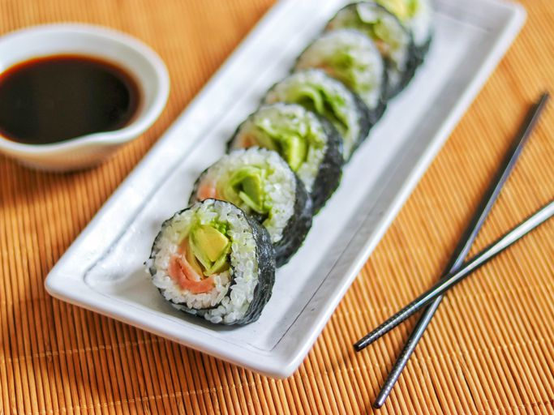

Home
Smoked Salmon Sushi Roll

Salmon sushi rolls are surprisingly easy to make at home! You just need a
good salmon sushi recipe — and that's where we come in.
Ingredients
- Sushi rice
- Rice wine vinegar
- Seaweed
- Wasabi paste
- Smoked salmon
- A cucumber
- An avocado
Steps
-
Soak and cook the rice, then mix in the vinegar and cool in an even
layer on a plate.
- Assemble the sushi rolls
- Roll the sushi tightly and cut into eight pieces.